1. 01-calm-today
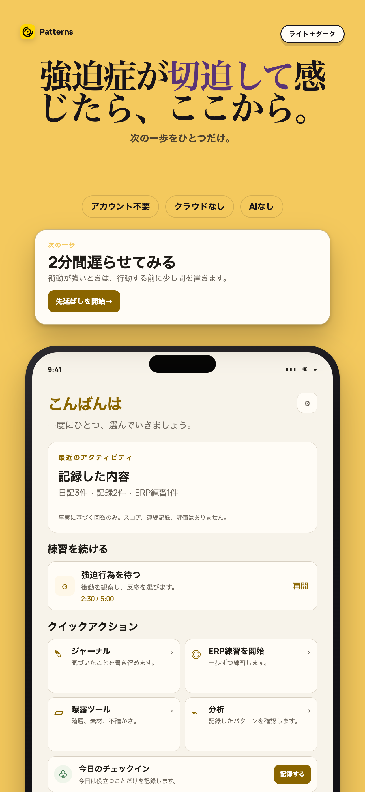
Apple 1290×2796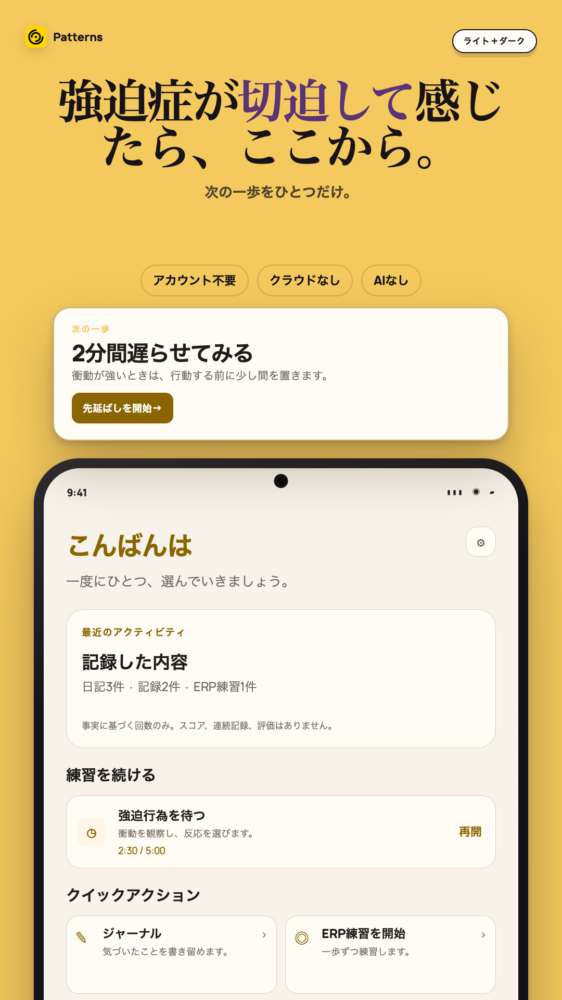
Play 1080×1920事実に基づく活動回数と2分間の強迫行為の先延ばしを表示したPatternsの「今日」画面。
2. 02-delay-the-urge
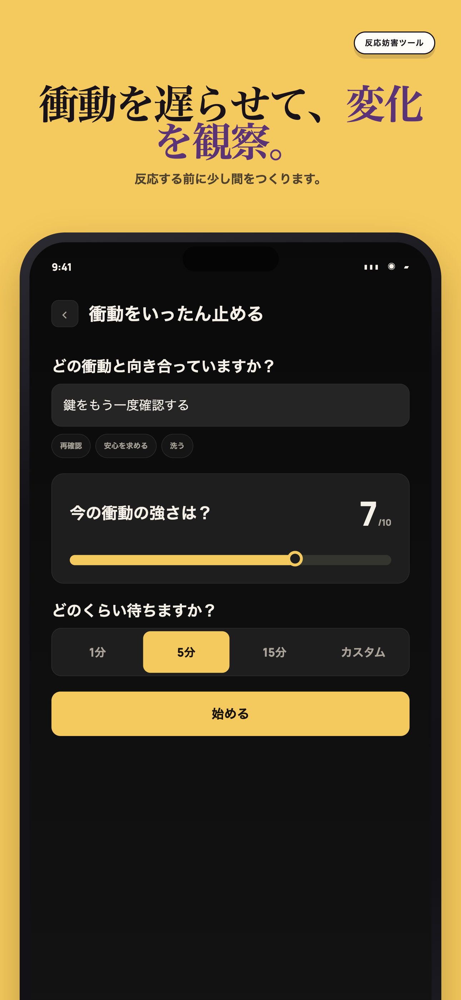
Apple 1290×2796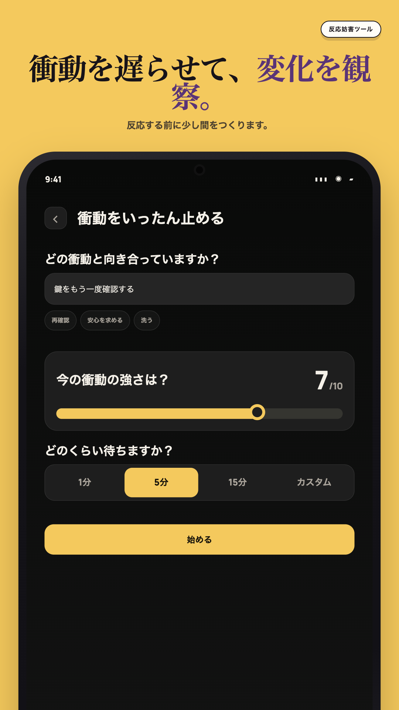
Play 1080×1920衝動の内容、本人が記録した強さ、待つ時間を設定する強迫行為の先延ばし画面。
3. 03-build-your-exposure-ladder
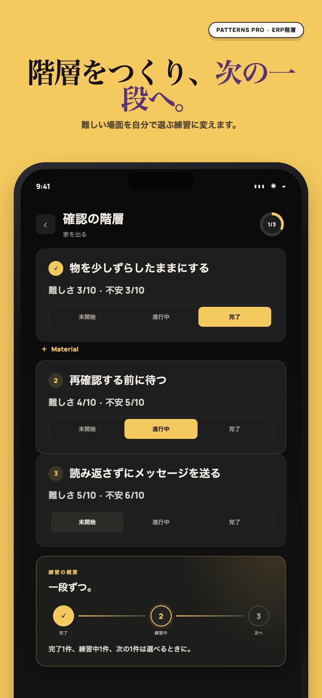
Apple 1290×2796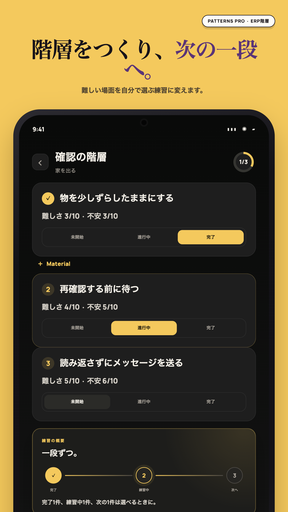
Play 1080×19203つの曝露ステップと各練習状態を文字で示した曝露階層。
4. 04-see-patterns-not-judgments
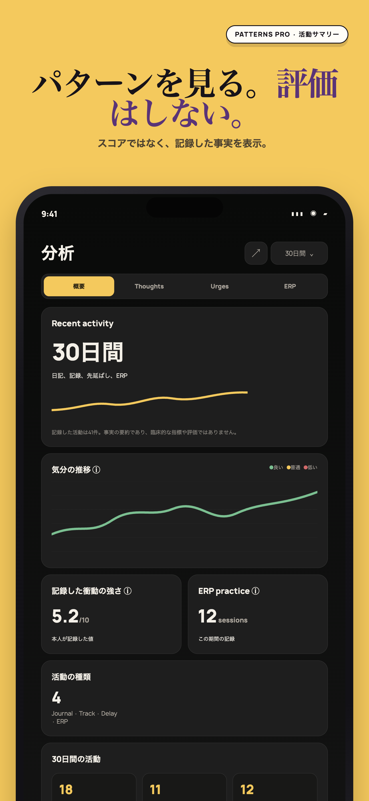
Apple 1290×2796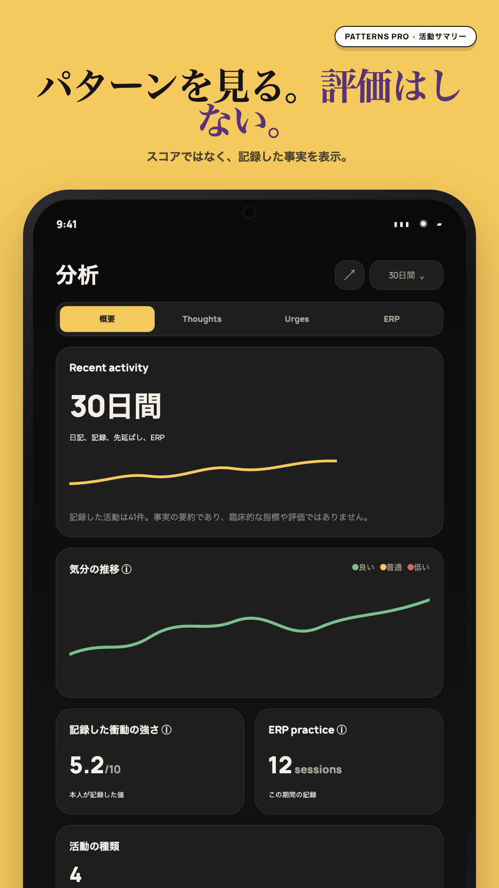
Play 1080×1920日記、先延ばし、ERPの事実に基づく回数を表示し、スコアや連続記録を使わない穏やかなインサイト。
5. 05-no-ai-to-ask
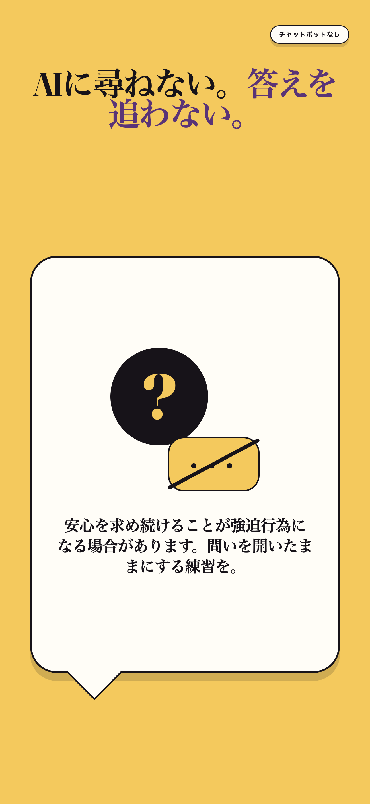
Apple 1290×2796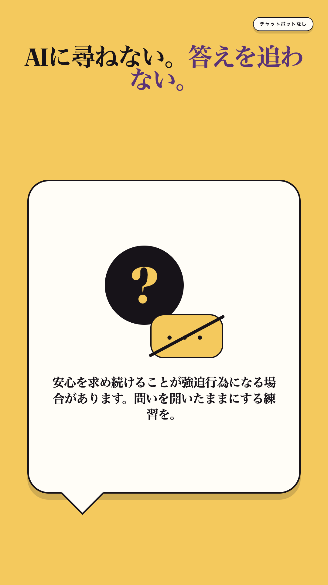
Play 1080×1920Patternsがすぐに安心を与えるチャットボットを提供しないことを説明する画面。
6. 06-nothing-leaves-your-phone
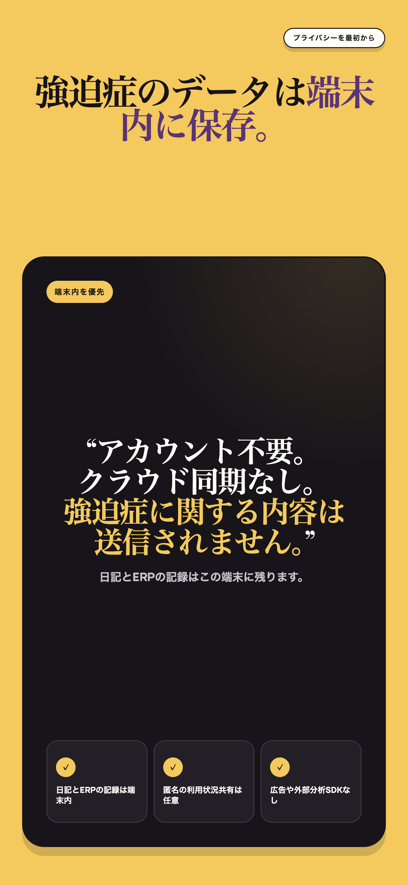
Apple 1290×2796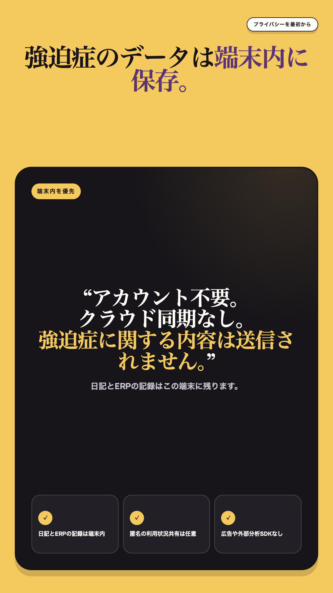
Play 1080×1920手動で書き出さない限り、日記とERPの記録が端末内に残ることを示すプライバシーカード。
7. 07-private-journaling
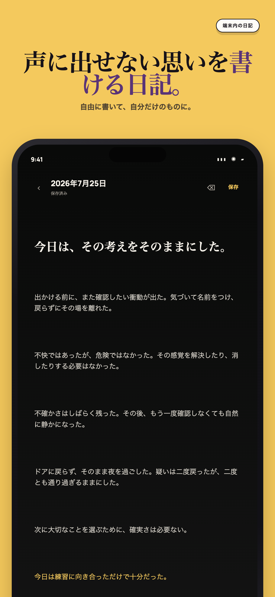
Apple 1290×2796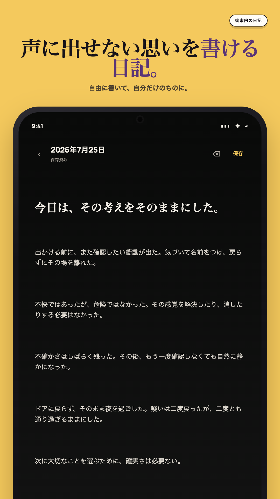
Play 1080×1920保存状態と書式設定を表示した、端末内のプライベート日記エディター。
8. 08-patterns-pro
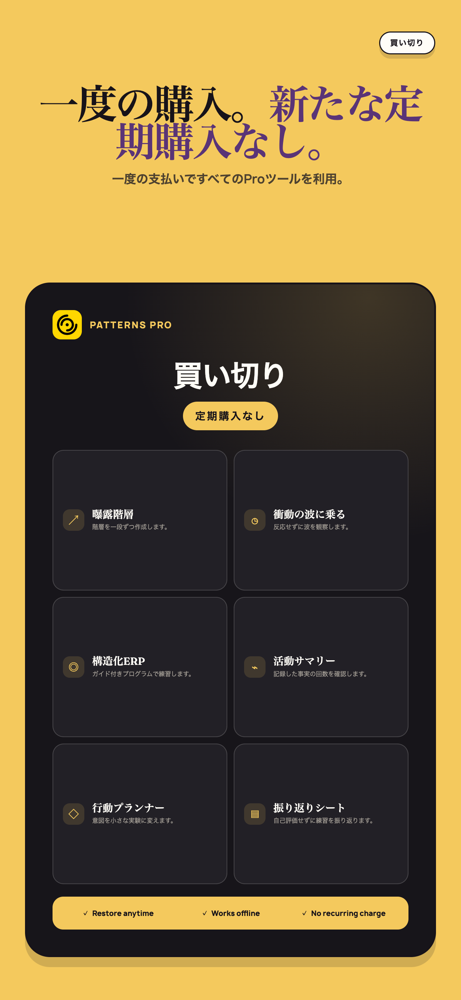
Apple 1290×2796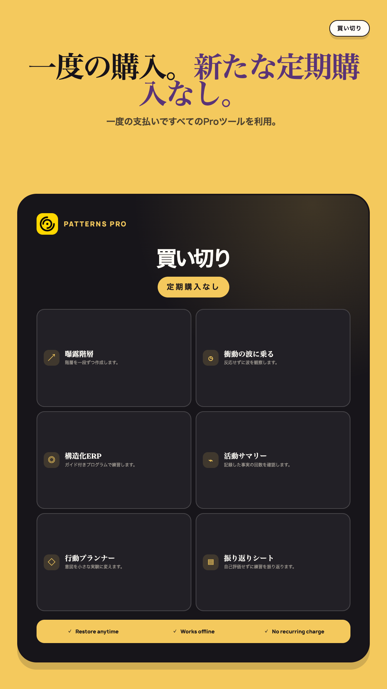
Play 1080×1920セルフヘルプと振り返りのツール一覧を示したPatterns Proの買い切り購入画面。
Google Play feature graphic
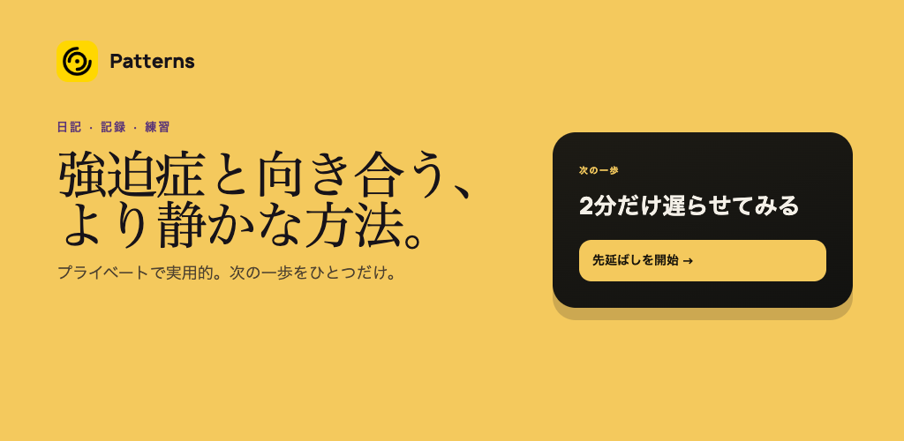
Play 1024×500強迫症と向き合う、より静かな方法。 プライベートで実用的。次の一歩をひとつだけ。